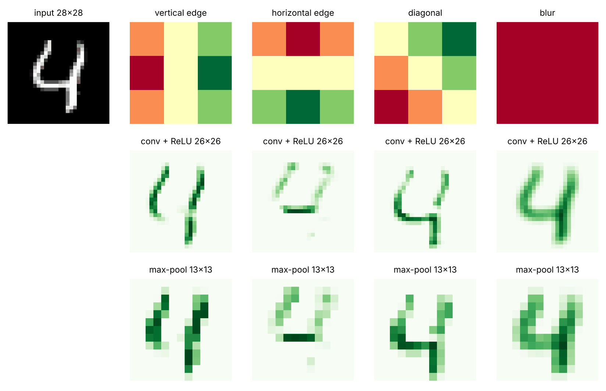
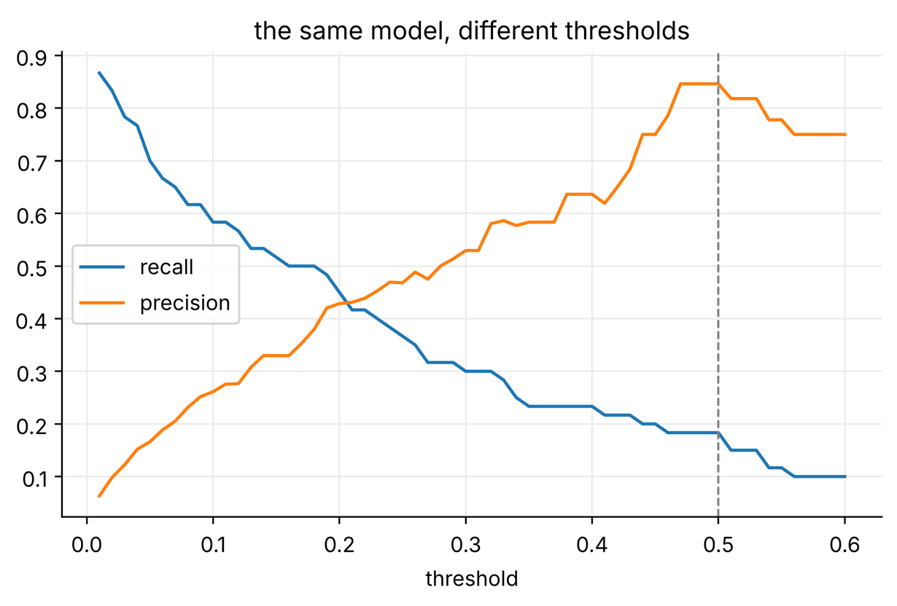
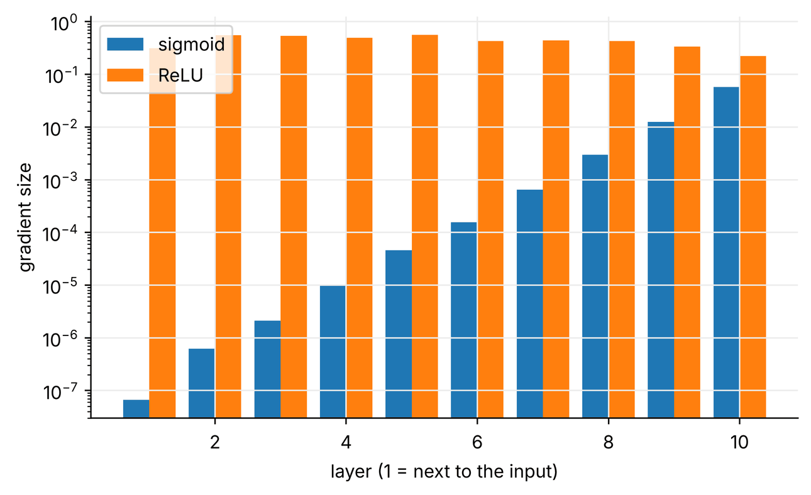
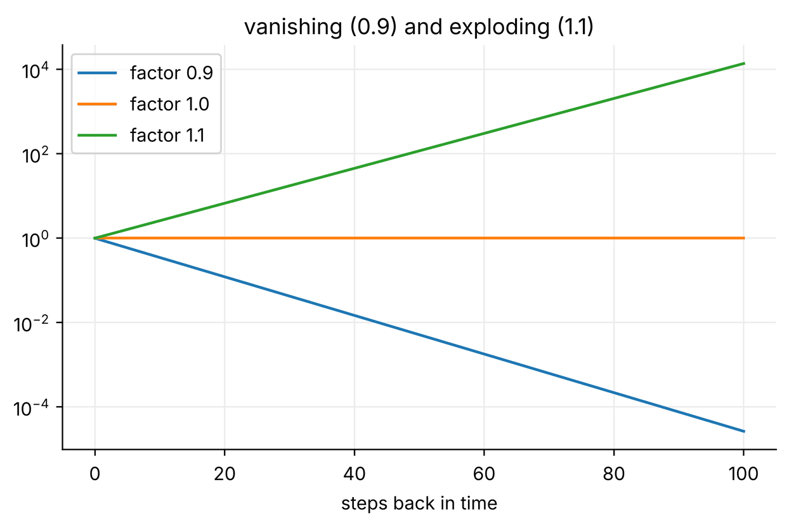

Practice · Filters & problems in Python
Convolution and training problems, line by line.
A complete, runnable notebook for chapters 9–10. Slide filters over a digit and pool the feature maps, reproduce the fraud experiment (accuracy against recall, class weights, SMOTE, undersampling), measure vanishing gradients layer by layer and see why clipping stops exploding gradients. NumPy, Matplotlib and scikit-learn. Hover over (or tap) any line of code to see what it does.
1 Hover over or tap any numbered line of code to highlight its explanation. Every output and chart below was produced by running this exact notebook.
1Setup
- %config InlineBackend.figure_format = "retina"1
- import numpy as np2
- import matplotlib.pyplot as plt3
- from sklearn.linear_model import LogisticRegression4
- from sklearn.metrics import accuracy_score, recall_score, precision_score5
-
- plt.rcParams["figure.figsize"] = (7, 4)6
- plt.rcParams["axes.spines.top"] = False7
- plt.rcParams["axes.spines.right"] = False7
- plt.rcParams["axes.grid"] = True8
- plt.rcParams["grid.color"] = "#ececec"8
-
- import gzip, os, urllib.request9
-
- URL = "https://raw.githubusercontent.com/fgnt/mnist/master/"10
-
- def load(name, offset):11
- if not os.path.exists(name):12
- urllib.request.urlretrieve(URL + name, name)12
- with gzip.open(name) as f:13
- return np.frombuffer(f.read(), np.uint8, offset=offset)14
-
- X_train = load("train-images-idx3-ubyte.gz", 16).reshape(-1, 784) / 25515
- y_train = load("train-labels-idx1-ubyte.gz", 8)16
- X_test = load("t10k-images-idx3-ubyte.gz", 16).reshape(-1, 784) / 25517
- y_test = load("t10k-labels-idx1-ubyte.gz", 8)17
- print(X_test.shape)18
(10000, 784)
2Convolution by hand
A 3 × 3 filter slides over the 28 × 28 picture. At each position: multiply the 9 filter weights by the 9 pixels under them and add up: $y_{i,j} = \sum_u \sum_v k_{u,v}\, x_{i+u,\,j+v}$.
- def conv2d(img, k):1
- H, W = img.shape[0] - 2, img.shape[1] - 22
- out = np.zeros((H, W))2
- for i in range(H):3
- for j in range(W):4
- out[i, j] = (img[i:i + 3, j:j + 3] * k).sum()5
- return out5
-
- def maxpool(fm):6
- h, w = fm.shape[0] // 2, fm.shape[1] // 26
- return fm[:2 * h, :2 * w].reshape(h, 2, w, 2).max(axis=(1, 3))7
-
- filters = {8
- "vertical edge": np.array([[-1, 0, 1], [-2, 0, 2], [-1, 0, 1]]),9
- "horizontal edge": np.array([[-1, -2, -1], [0, 0, 0], [1, 2, 1]]),10
- "diagonal": np.array([[0, 1, 2], [-1, 0, 1], [-2, -1, 0]]),11
- "blur": np.ones((3, 3)) / 9,12
- }12
-
- img = X_test[4].reshape(28, 28)13
- fig, axes = plt.subplots(3, 5, figsize=(10, 6.2))14
- axes[0, 0].imshow(img, cmap="gray"); axes[0, 0].set_title("input 28×28", fontsize=8)14
- for c, (name, k) in enumerate(filters.items(), start=1):15
- fm = np.maximum(0, conv2d(img, k))16
- axes[0, c].imshow(k, cmap="RdYlGn"); axes[0, c].set_title(name, fontsize=8)17
- axes[1, c].imshow(fm, cmap="Greens"); axes[1, c].set_title("conv + ReLU 26×26", fontsize=8)18
- axes[2, c].imshow(maxpool(fm), cmap="Greens"); axes[2, c].set_title("max-pool 13×13", fontsize=8)19
- for ax in axes.ravel(): ax.axis("off")19
- plt.show()19
- print("weights in one 3×3 filter: 9 · weights from 784 pixels to 16 dense neurons:", 784 * 16)20

weights in one 3×3 filter: 9 · weights from 784 pixels to 16 dense neurons: 12544
3Data imbalance: 10,000 payments, 2% fraud
Simulate two features per payment (think: scaled amount and time of night). Frauds are shifted, but overlap with normal payments. 3,000 payments are held out for testing.
- rng = np.random.default_rng(2024)1
- n = 10_0002
- y = (np.arange(n) % 50 == 0).astype(int)3
- X = rng.normal(size=(n, 2))4
- X[y == 1] = rng.normal(size=(y.sum(), 2)) * 0.95 + [1.5, 1.2]5
- perm = rng.permutation(n); X, y = X[perm], y[perm]6
- Xtr, ytr, Xte, yte = X[:7000], y[:7000], X[7000:], y[7000:]7
- print("frauds in training set:", ytr.sum(), " in test set:", yte.sum())8
frauds in training set: 140 in test set: 60
- def smote(X, y, k=3, seed=0):1
- r = np.random.default_rng(seed)1
- F = X[y == 1]2
- need = (y == 0).sum() - len(F)3
- d = ((F[:, None, :] - F[None, :, :]) ** 2).sum(-1)4
- nb = np.argsort(d, axis=1)[:, 1:k + 1]5
- a = r.integers(len(F), size=need)6
- b = nb[a, r.integers(k, size=need)]7
- t = r.random((need, 1))8
- new = F[a] + t * (F[b] - F[a])9
- return np.vstack([X, new]), np.concatenate([y, np.ones(need, int)])10
-
- def undersample(X, y, ratio=4, seed=0):11
- r = np.random.default_rng(seed)11
- keep = np.concatenate([np.where(y == 1)[0], r.choice(np.where(y == 0)[0], ratio * y.sum(), replace=False)])11
- return X[keep], y[keep]11
-
- def report(name, model):12
- p = model.predict(Xte)13
- print(f"{name:30s} accuracy {accuracy_score(yte, p):6.1%} recall {recall_score(yte, p):4.0%} "13
- f"precision {precision_score(yte, p, zero_division=0):4.0%} caught {int(((p == 1) & (yte == 1)).sum())} of {yte.sum()}")13
-
- print(f"{'always legitimate':30s} accuracy {(yte == 0).mean():6.1%} recall 0%")14
- report("trained on the data as it is", LogisticRegression().fit(Xtr, ytr))15
- report("+ class weights", LogisticRegression(class_weight="balanced").fit(Xtr, ytr))16
- report("+ SMOTE (training set only)", LogisticRegression().fit(*smote(Xtr, ytr)))17
- report("+ undersampling 4:1", LogisticRegression().fit(*undersample(Xtr, ytr)))18
always legitimate accuracy 98.0% recall 0% trained on the data as it is accuracy 98.3% recall 18% precision 85% caught 11 of 60 + class weights accuracy 84.8% recall 83% precision 10% caught 50 of 60 + SMOTE (training set only) accuracy 85.0% recall 83% precision 10% caught 50 of 60 + undersampling 4:1 accuracy 95.2% recall 62% precision 23% caught 37 of 60
Moving the threshold
The plain model outputs a probability. Lowering the threshold from 0.5 catches more fraud but raises more false alarms.
- plain = LogisticRegression().fit(Xtr, ytr)1
- prob = plain.predict_proba(Xte)[:, 1]2
- ts = np.linspace(0.01, 0.6, 60)3
- rec = [recall_score(yte, prob >= t) for t in ts]4
- pre = [precision_score(yte, prob >= t, zero_division=0) for t in ts]5
- plt.plot(ts, rec, label="recall"); plt.plot(ts, pre, label="precision")5
- plt.axvline(0.5, color="gray", ls="--", lw=1)6
- plt.xlabel("threshold"); plt.legend(); plt.title("the same model, different thresholds")6
- plt.show()7

4Vanishing gradients, measured
A 10-layer network of 32 neurons per layer. Push 64 random inputs through, backpropagate a cost, and record the average size of the weight gradients in each layer.
- def grad_sizes(act, depth=10, width=32, seed=3):1
- r = np.random.default_rng(seed)1
- f, df = {"sigmoid": (lambda z: 1 / (1 + np.exp(-z)), lambda a: a * (1 - a)),2
- "relu": (lambda z: np.maximum(0, z), lambda a: (a > 0).astype(float))}[act]2
- scale = np.sqrt(2 / width) if act == "relu" else 1 / np.sqrt(width)3
- W = [r.normal(0, scale, (width, width)) for _ in range(depth)]3
- acts = [r.normal(size=(64, width))]4
- for Wl in W: acts.append(f(acts[-1] @ Wl.T))5
- delta = (acts[-1] - r.normal(size=acts[-1].shape)) * df(acts[-1])6
- sizes = []6
- for l in range(depth - 1, -1, -1):7
- sizes.append(np.abs(delta.T @ acts[l]).mean() / 64)8
- delta = (delta @ W[l]) * df(acts[l])9
- return sizes[::-1]10
-
- layers = np.arange(1, 11)10
- plt.bar(layers - 0.2, grad_sizes("sigmoid"), 0.4, label="sigmoid")11
- plt.bar(layers + 0.2, grad_sizes("relu"), 0.4, label="ReLU")12
- plt.yscale("log"); plt.xlabel("layer (1 = next to the input)"); plt.ylabel("gradient size"); plt.legend()13
- plt.show()13
- s = grad_sizes("sigmoid"); print(f"sigmoid: last layer / first layer = {s[-1] / s[0]:,.0f}×")14

sigmoid: last layer / first layer = 874,025×
5Exploding gradients and clipping
In an RNN the same factor is multiplied once per time step. A factor of 1.1 over 100 steps is about 14,000. Gradient clipping caps the gradient’s length: $\text{if } \lVert g \rVert > c:\ g \leftarrow c\,g/\lVert g \rVert$.
- steps = np.arange(101)1
- for f in [0.9, 1.0, 1.1]:2
- plt.plot(steps, f ** steps, label=f"factor {f}")3
- plt.yscale("log"); plt.xlabel("steps back in time"); plt.legend(); plt.title("vanishing (0.9) and exploding (1.1)")3
- plt.show()3
-
- def clip(g, c=1.0):4
- norm = np.linalg.norm(g)5
- return g * (c / norm) if norm > c else g6
-
- g = np.array([300.0, -400.0])7
- print("before:", g, " length", np.linalg.norm(g))7
- print("after: ", clip(g), " length", np.linalg.norm(clip(g)))8

before: [ 300. -400.] length 500.0 after: [ 0.6 -0.8] length 1.0
6What you built
| Problem | Symptom | Fix |
|---|---|---|
| data imbalance | high accuracy, low recall | class weights, SMOTE, threshold |
| vanishing gradient | first layers do not learn | ReLU, good initialisation, residual connections |
| exploding gradient | loss jumps or becomes NaN | gradient clipping, smaller η |
Symptom → cause → fix: say all three.